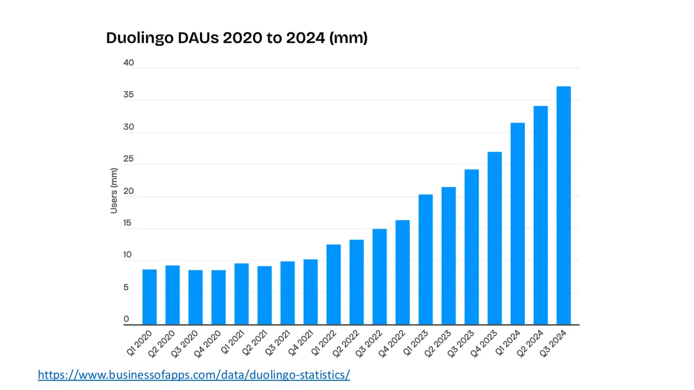
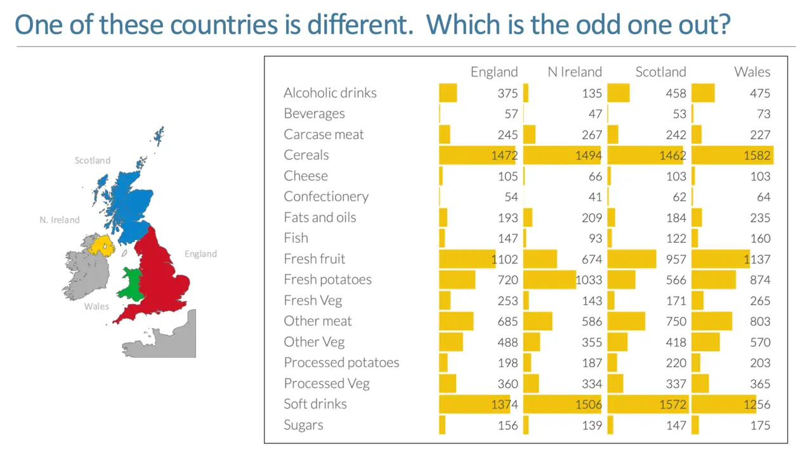

In-class exercises and participation 20%
Lecture days end with a short two or three question quiz on Canvas. Lab days end with submitting the code we wrote together, graded pass/fail.
Heinz College · Public Policy & Management
Machine learning in Python for students headed into policy and management work.
A full-semester course at Heinz College that teaches machine learning with Python to students who will apply it to public policy and management problems.


slides from the decks
I taught from
Spring 2026 · Tuesdays and Thursdays, with a Friday recitation
Scroll the schedule and the slides follow along: five from each session, picked from the decks I taught from.


Method
Every method is framed as a policy question: which households in a broadband subsidy program are about to drop out, how to route thousands of student loan complaints, whether a language model and a person agree on how serious a complaint is. In the language model project, students have a model sort complaints into six policy categories and measure its agreement with other models using Cohen's kappa.
Instead of one end-of-term project, students do four applied projects across the semester (clustering, classification, language models, and computer vision), a midterm project for a public agency or nonprofit, and a final project with a three- to five-minute pitch. A CMU alum working as a product data scientist gave a guest lecture on machine learning for product decisions.

What students hand in
Lecture days end with a short two or three question quiz on Canvas. Lab days end with submitting the code we wrote together, graded pass/fail.
Weekly open-book quizzes on Canvas covering lectures and readings, about 15 to 20 minutes each, with the two lowest scores dropped. No generative AI on quizzes.
Short individual labs of one to two hours, graded on completion, each starting from a notebook. Topics include avocado prices and sales across U.S. markets, feature engineering and PCA on a 70-column real estate dataset, random forests predicting home sale prices, predicting which households drop out of a subsidized broadband program, and NLP on CFPB student loan complaints.
Four projects in groups of up to three, graded the way a professional deliverable would be. Clustering segments credit card customers with k-means and at least two methods for choosing the number of clusters. Classification models customer retention at a student travel company. The language model project has a model reclassify student loan complaints into six policy categories, check agreement between models with Cohen's kappa, and test whether models can score complaint severity. The last project applies computer vision.
Groups pick a decision problem for a public agency, nonprofit, or mission-driven organization and answer it with clustering, regression, or classification. Deliverables are an 8 to 12 page paper and a short presentation at the start of a class in the second half of the term.
A policy question of the group's own, or one I define (legislative text, public comment sentiment, satellite imagery), answered with NLP, neural networks, language models, or vision. Deliverables are a one-page proposal, a 5 to 10 page report, and a 3 to 5 minute pitch on the last day of class.
In their words
4.80 out of 5 average teaching rating · 1 section · 40 student responses · all evaluations
Dr. Collier made me actually care about this course. I was not excited about it and felt like it was going to be massively over my head.
One of the best courses I have taken at Heinz. He does a wonderful job of explaining ML topics to technical and non-technical students alike.
Thank you for making this class project based, which helps me prove to my future employer that I can actually use these skills.
I LOVE THIS COURSE, PLEASE STAY IN THIS COURSE
Revision history
I took over this Heinz College course in Spring 2026 and rebuilt it as fourteen modules, each pairing a lecture with a lab. It runs from clustering and regression through A/B testing to language models and computer vision. It ends with a teaching case I wrote comparing Tesla's camera-only approach to self-driving with Waymo's sensor fusion.
Heinz students get the full materials on Canvas.